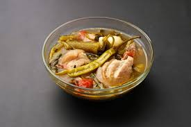

Sinigang is a Filipino soup cooked with pork. Serve with rice and for additional sauce, use soy or fish sauce. If you want to, you can add what Filipinos call gabi gabi, which is a small taro root. When peeled they look like potatoes. You can add five to six of them when you add the water and make sure they are cooked through. Take them out when they are cooked because they can get too soft.